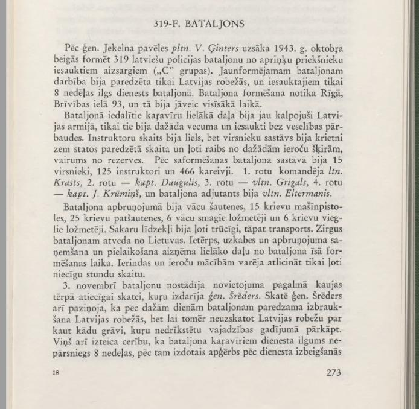
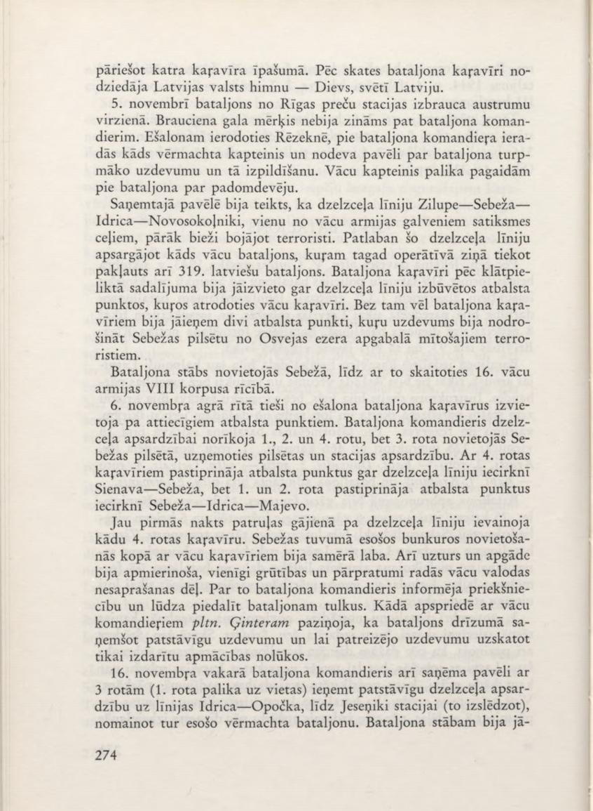
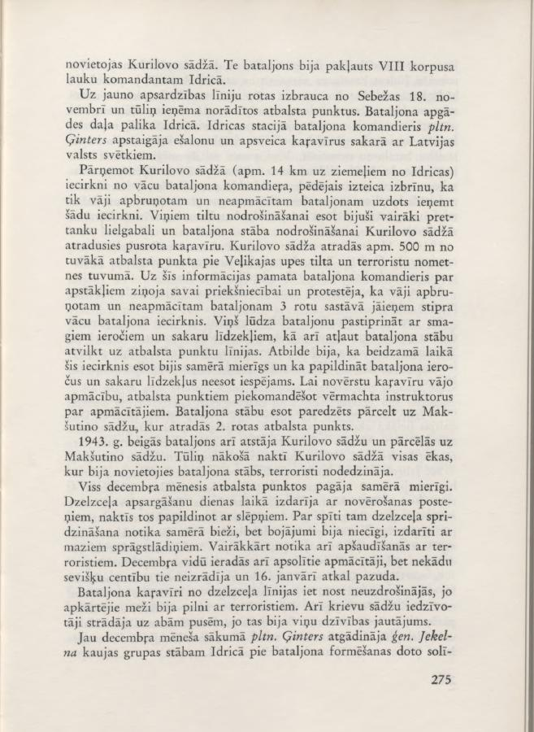
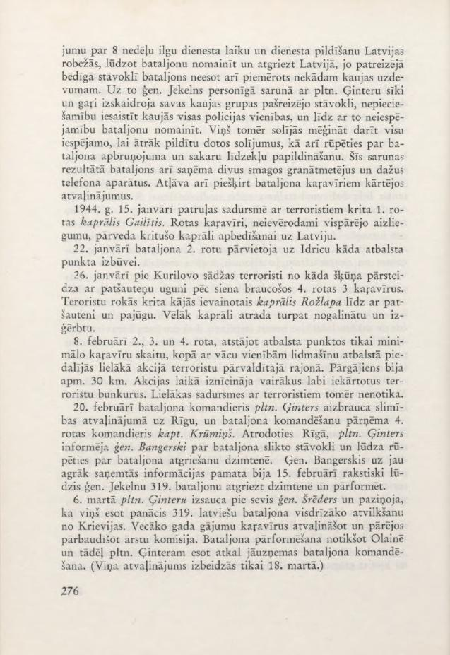
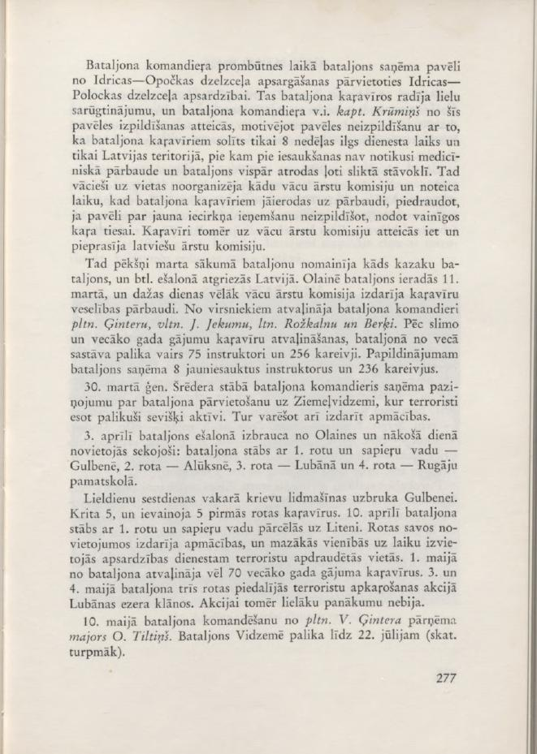

By order of Gen. Jekelns, Lt. Col. V. Ģinters began forming the 319th Latvian police battalion at the end of October 1943 from the guards conscripted by the district chiefs ("C" groups). The newly formed battalion was to operate only within the borders of Latvia, and the conscripts would serve only 8 weeks in the battalion. The formation of the battalion took place in Riga, at 93 Brīvības Street, and it had to be completed in the shortest possible time.
The majority of the soldiers assigned to the battalion had already served in the Latvian army, but they were of different ages and were conscripted without a medical examination. The number of instructors was large, but the number of officers was well below the number provided for in the statutes and very motley from different branches of arms, most of them from the reserve. After formation, the battalion consisted of 15 officers, 125 instructors and 466 soldiers. The 1st company was commanded by Lt. Krasts, 2nd Company — Capt. Daugulis, 3rd Company — Vltn. Grigals, 4th Company — Capt. J. Krūmiņš, and the battalion adjutant was Vltn. Eltermanis.
The battalion's armament consisted of German rifles, 15 Russian machine guns, 25 Russian self-propelled guns, 6 German heavy machine guns and 6 Russian light machine guns. Communication equipment was very scarce, as was transport. Horses were brought to the battalion from Lithuania. Receiving and fitting uniforms, harnesses and armament took up most of the battalion's short formation time. Only a very few hours could be set aside for drills and weapons training.
On November 3, the battalion was lined up in the staging yard in battle dress for a parade, which was conducted by Gen. Schrēders. Gen. Schröder also announced that in a few days the battalion is expected to leave for the Latvian border, but that the Latvian border should not be considered as some kind of ditch that should not be crossed if necessary. He also expressed the hope that the battalion's soldiers will not serve for more than 8 weeks, after which the issued clothing would

pass into the possession of each soldier. After the parade, the battalion soldiers sang the Latvian national anthem - God bless Latvia.
On November 5, the battalion left the Riga goods station in an eastern direction. The final destination of the journey was not known even to the battalion commander. When the echelon arrived in Rēzekne, a Wehrmacht captain came to the battalion commander and handed over the order for the battalion's further task and its execution. The German captain remained with the battalion for the time being as an advisor.
The order received stated that the Zilupe-Sebeža-Idrica-Novosokolniki railway line, one of the main traffic routes of the German army, was too often damaged by terrorists. At present, this railway line is being guarded by a German battalion, to which the 319th Latvian battalion is now also operationally subordinated. The battalion soldiers, according to the attached distribution, were to be deployed along the railway line in support points built by German soldiers. In addition, the battalion soldiers were to occupy two support points, the task of which was to secure the city of Sebeža from terrorists living in the Osveja Lake area.
The battalion headquarters was located in Sebeža, thus being at the disposal of the 16th German Army's VIII Corps.
Early in the morning of November 6, the battalion soldiers were deployed to the appropriate support points directly from the echelon. The battalion commander assigned the 1st, 2nd and 4th companies to guard the railway, while the 3rd company was deployed in the city of Sebeža, taking on the guard of the city and the station. The soldiers of the 4th company reinforced the support points along the railway line in the Sienava-Sebeža section, while the 1st and 2nd companies reinforced the support points in the Sebeža-ldrica-Majevo section.
Already during the first night patrol march along the railway line, a soldier of the 4th Company was wounded. The accommodation in the bunkers near Sebeža with German soldiers was relatively good. Food and supplies were also satisfactory, only difficulties and misunderstandings arose due to the misunderstanding of the German language. The battalion commander informed the superiors about this and asked to assign interpreters to the battalion. During a meeting with the German commanders, Pltn. Ģinters was informed that the battalion would soon receive an independent task and that the current task should be considered for training purposes only.
On the evening of November 16, the battalion commander also received an order with 3 companies (the 1st company remained in place) to take up independent railway security on the Idrica-Opočka line, up to the Jeseníky station (excluding it), replacing the Wehrmacht battalion there. The battalion headquarters had to

The village of Kurilovo is located here. Here the battalion was subordinate to the field commander of the VIII Corps in Idrica.
The companies left Sebeža on November 18 and immediately occupied the indicated support points. The battalion's supply part remained in Idrija. At the Idrija station, the battalion commander, Lt. Gen. Ģinters, walked around the echelon and congratulated the soldiers on the Latvian national holiday.
Taking over the Kurilovo village (approx. 14 km north of Idrija) from the German battalion commander, the latter expressed surprise that such a poorly armed and untrained battalion was assigned to occupy such a place. They had several anti-tank guns to secure the bridges and half a company of soldiers to secure the battalion headquarters in Kurilovo village. Kurilovo village was located approx. 500 m from the nearest support point at the Velikaya River bridge and near the terrorist camp. Based on this information, the battalion commander reported the situation to his superiors and protested that a poorly armed and untrained battalion consisting of 3 companies would have to occupy the area of a strong German battalion. He asked to reinforce the battalion with heavy weapons and communications equipment, as well as to allow the battalion headquarters to be withdrawn to the support point line. The answer was that this area had been relatively calm recently and that it was not possible to supplement the battalion's weapons and communications equipment. In order to prevent the soldiers' poor training, Wehrmacht instructors would be assigned to the support points as trainers. The battalion headquarters was supposed to be transferred to the Makshutino settlement, where the 2nd company's support point was located.
1943. In the end, the battalion also left the village of Kurilovo and moved to the village of Makshutino. The very next night, the terrorists burned down all the buildings in the village of Kurilovo, where the battalion headquarters was located. The entire month of December passed relatively peacefully in the support points. The railway was guarded by observation posts during the day, supplemented by ambushes at night. Despite this, railway bombings occurred relatively often, but the damage was insignificant, caused by small explosive charges. There was also several exchanges of fire with terrorists. In mid-December, the promised trainers also arrived, but they did not show any particular dedication and disappeared again on January 16.
The battalion soldiers did not dare to leave the railway line, because the surrounding forests were full of terrorists. The inhabitants of the Russian villages also worked on both sides, because it was a matter of their lives.
Already at the beginning of December, Lieutenant General Ģinter reminded the headquarters of the battle group of Gen. Jekeln in Idrica of the step taken during the formation of the battalion.

about the 8-week long service period and the performance of service within the borders of Latvia, asking to replace the battalion and return it to Latvia, because in its current sad state the battalion was not suitable for any combat mission. In response, Gen. Jekelns, in a personal conversation with Pltn. Ģinteru, explained in detail and at length the current situation of his battle group, the need to involve all police units in the battles, and therefore the impossibility of replacing the battalion. However, he promised to try to do everything possible to fulfill the promises made more quickly, as well as to take care of replenishing the battalion's armament and communications equipment. As a result of this conversation, the battalion also received two heavy grenade launchers and some telephones. He also allowed the battalion's soldiers to be granted regular leave.
On January 15, 1944, Corporal Gailītis of the 1st Company fell in a patrol clash with terrorists. The company soldiers, ignoring the general ban, transferred the fallen corporal to Latvia for burial.
On January 22, the battalion's 2nd company was moved to Idritsa to build a support point.
On January 26, terrorists from a barn near the village of Kurilovo surprised 3 soldiers of the 4th company who were driving for hay with self-propelled guns. Corporal Rozlapa, who was wounded in the legs, fell into the hands of the terrorists along with his self-propelled gun and cart. Later, the corporal was found killed and undressed there.
On February 8, the 2nd, 3rd and 4th companies, leaving only a minimum number of soldiers at the support points, together with German units with aircraft support, participated in a larger operation in the terrorist-controlled area. The march was approximately 30 km. During the operation, several well-equipped terrorist bunkers were destroyed. However, there were no major clashes with the terrorists.
On February 20, the battalion commander, Lieutenant Colonel Ģinters, went on sick leave to Riga, and the battalion was taken over by the commander of the 4th company, Captain Krūmiņš. While in Riga, Lieutenant Colonel Ģinters informed Gen. Bangerskis about the battalion's poor condition and asked him to take care of the battalion's return to its homeland. Gen. Bangerskis, based on the information he had received earlier, had written to Gen. Jekeln on February 15 to return the 319th battalion to its homeland and reform it.
On March 6, Lieutenant Colonel Ģinters was summoned by Gen. Schrēders and announced that he had achieved the earliest possible withdrawal of the 319th Latvian battalion from Russia. The older soldiers would be put on leave and the rest would be examined by a medical commission. The battalion's reorganization is taking place in Olaine and therefore, Lt. Gen. Ginters is supposed to assume command of the battalion again. (His leave ended only on March 18.)

During the absence of the battalion commander, the battalion received an order from the Idrija-Opočka railway guard to move to the Idrija-Polotsk railway guard. This caused great disappointment among the battalion soldiers, and the battalion commander, acting captain Krūmiņš, refused to carry out this order, motivating his non-fulfillment of the order by the fact that the battalion soldiers had been promised only 8 weeks of service and only in the territory of Latvia, in addition, no medical examination had been carried out upon conscription and the battalion was in very poor condition. Then the Germans organized a German medical commission on the spot and set a time when the battalion soldiers should come for an examination, threatening that if the order to occupy a new station was not carried out, they would hand over the guilty to a military court. However, the soldiers refused to go to the German medical commission and demanded a Latvian medical commission.
Then suddenly at the beginning of March the battalion was replaced by a Cossack battalion, and the battalion returned to Latvia in echelon. The battalion arrived in Olaine on March 11, and a few days later the German medical commission conducted a health check-up of the soldiers. The battalion commanders, Pltn. Ģinter, Vltn. J. Jekum, Lt. Rozkalns and Berķi, were dismissed from the ranks. After the sick and elderly soldiers were dismissed, 75 instructors and 256 soldiers remained in the battalion from the old composition. In addition, the battalion received 8 newly recruited instructors and 236 soldiers.
On March 30, at the headquarters of Gen. Schröder, the battalion commander received a notification about the battalion's transfer to Northern Vidzeme, where terrorists had remained particularly active. Training could also be carried out there.
On Easter Saturday evening, Russian planes attacked Gulbene. Five soldiers of the first company were killed and five wounded. On April 10, the battalion headquarters with the 1st company and sapper platoon moved to Litene. The companies conducted training in their positions and, in smaller units, temporarily deployed for security service in areas threatened by terrorists. On May 1, another 70 senior soldiers were discharged from the battalion. On May 3 and 4, the battalion's three companies participated in a counter-terrorist operation in the Lubāna Lake area. However, the operation did not have any major success.
On May 10, Major O. Tiltiņš took over the command of the battalion from Lieutenant Colonel V. Ģinter. The battalion remained in Vidzeme until July 22 (Continued).